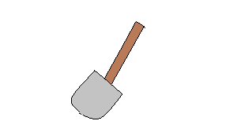

Welcome to the tools page, here you will find everything we know about tools.
Currently we have shovels, gardening gloves, and rakes. We also carry larger electrical tools such as lawn mowers, chainsaws, and leaf blowers.
Call our store for more information as to what is in stock.
